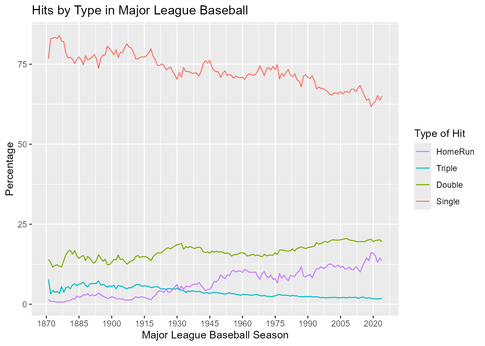
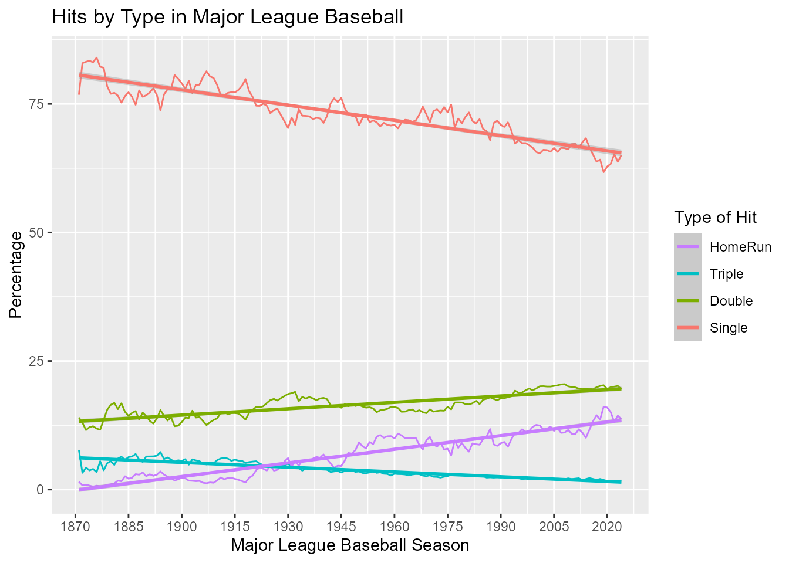

Graphs of Hits By Type in MLB
Vanessa Foot
2024-09-29
Source:vignettes/hits-by-type.Rmd
hits-by-type.RmdHow has the percentage of various types of hits (singles, doubles,
triples, home runs) changed over time in baseball history? Are there any
overall trends? This vignette examines these questions in a simple
analysis of the Batting data.
The Batting data
First, we load the Batting data from the
Lahman package. We also need to load the dplyr
package so that we can sort and organize the data. The batting data has
much more than we need.
library("dplyr")
data(Batting, package="Lahman")
str(Batting) #take a look at the data
## 'data.frame': 113799 obs. of 22 variables:
## $ playerID: chr "aardsda01" "aardsda01" "aardsda01" "aardsda01" ...
## $ yearID : int 2004 2006 2007 2008 2009 2010 2012 2013 2015 1954 ...
## $ stint : int 1 1 1 1 1 1 1 1 1 1 ...
## $ teamID : Factor w/ 149 levels "ALT","ANA","ARI",..: 117 35 33 16 116 116 93 94 4 80 ...
## $ lgID : Factor w/ 7 levels "AA","AL","FL",..: 5 5 2 2 2 2 2 5 5 5 ...
## $ G : int 11 45 25 47 73 53 1 43 33 122 ...
## $ AB : int 0 2 0 1 0 0 0 0 1 468 ...
## $ R : int 0 0 0 0 0 0 0 0 0 58 ...
## $ H : int 0 0 0 0 0 0 0 0 0 131 ...
## $ X2B : int 0 0 0 0 0 0 0 0 0 27 ...
## $ X3B : int 0 0 0 0 0 0 0 0 0 6 ...
## $ HR : int 0 0 0 0 0 0 0 0 0 13 ...
## $ RBI : int 0 0 0 0 0 0 0 0 0 69 ...
## $ SB : int 0 0 0 0 0 0 0 0 0 2 ...
## $ CS : int 0 0 0 0 0 0 0 0 0 2 ...
## $ BB : int 0 0 0 0 0 0 0 0 0 28 ...
## $ SO : int 0 0 0 1 0 0 0 0 1 39 ...
## $ IBB : int 0 0 0 0 0 0 0 0 0 NA ...
## $ HBP : int 0 0 0 0 0 0 0 0 0 3 ...
## $ SH : int 0 1 0 0 0 0 0 0 0 6 ...
## $ SF : int 0 0 0 0 0 0 0 0 0 4 ...
## $ GIDP : int 0 0 0 0 0 0 0 0 0 13 ...Data munging
We take the full Batting data frame and select what we need to use. We want a data frame that shows us the year, followed by total hits for that year, and then singles, doubles, triples and home runs.
Singles is not a column in this data frame, so we need to add it by
taking total hits (H), and subtracting the other types of
hits from it. The mutate function does the math for us and
adds a column in.
batting <- Batting %>%
# select the variables that we want left after we filter the data
select(yearID, H, X2B, X3B, HR) %>%
# select the years from 1871+
filter(yearID >= 1871) %>%
group_by(yearID) %>%
# summarise_each(funs(sum(., na.rm=TRUE))) %>%
summarise_all(funs(sum(., na.rm=TRUE))) %>%
# we summarize by year, and then na.rm takes care of 0's in the data
mutate(X1 = H-(X2B+X3B+HR)) %>% #create a column for singles
# we eventually want these as a percentage of hits, so we can do the math now
mutate(Single = X1/H*100) %>%
mutate(Double = X2B/H*100) %>%
mutate(Triple = X3B/H*100) %>%
mutate(HomeRun = HR/H*100)Now, just select the variables we want to plot
bat <- batting %>%
select(yearID, Single, Double, Triple, HomeRun)
#this makes a nice looking data frame before we move onWe have our data in wide format right now. We need it to be in long
format so that we can use ggplot to make a graph. The
reshape2 package does this easily. We want to melt our data
frame, but keep YearID as the ID variable (meaning that it stays put in
it’s own column). Then, we look at the data to make sure it’s what we
want.
Graphs
To look at hits per year in a line graph, we will use
ggplot2. The data is called bat_long, and our
variables of interest are year (yearID), the percentage of
each type of hit (value), and the type of hit
(variable).
We can use geom_line and then make titles with
xlab, ylab, and ggtitle. Instead
of using the default scaling, we can set our own scale_x
and scale_y.
The guides function tells ggplot what we want from our
legend and overrides the default. We want singles at the bottom (so we
reverse the legend which automatically does the opposite), and we want
to set our own title for the legend.
library(ggplot2)
hitsperyear <- ggplot(bat_long, aes(x=yearID, y= value, col=variable)) +
geom_line() +
xlab("Major League Baseball Season") +
ylab("Percentage") +
ggtitle("Hits by Type in Major League Baseball") +
scale_x_continuous(breaks = c(1870, 1885, 1900, 1915, 1930, 1945,
1960, 1975, 1990, 2005, 2020 )) +
scale_y_continuous(breaks = c(0, 25, 50, 75, 100))+
guides(colour=guide_legend(reverse=TRUE,
aes(ggtitle= "Type of Hit")))
hitsperyear
Add trend lines
We can see the overall trends more clearly by adding linear regression lines for each type of hit.
hitsperyear + geom_smooth(method="lm")
So, the percentage of singles and triples have declined over time, while the percentage of doubles and home runs have increased. Can you think of any reason for this?
Further analyses: Your turn
Here are some questions to provoke further analyses of these data sets. If you find something interesting, post it in a Github Gist or forward it to Team Lahman as in a Lahman issue.
-
This analysis uses total hits for all players in all teams over time. What problems might there be with this analysis?
- Examine the data for possible outliers or unusual observations.
- Would it make sense to exclude players who have fewer than some
number of plate appearances (
AB) in a given year?